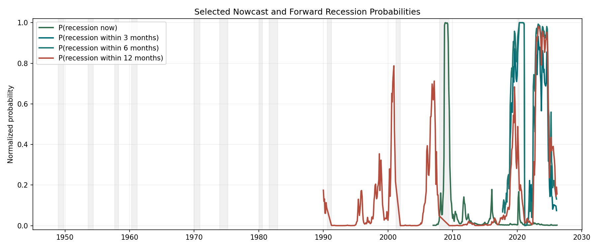
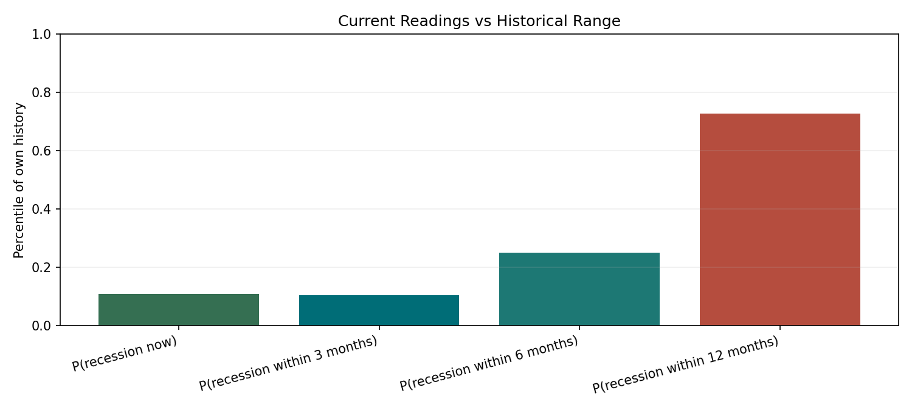
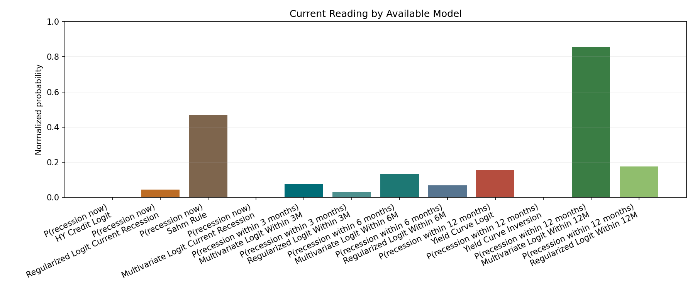
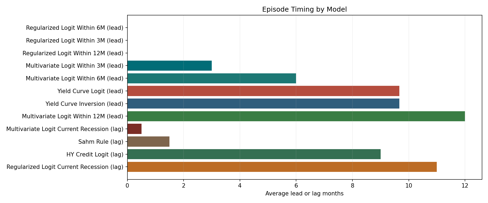

Prepared on March 30, 2026 from the repository's current monitoring HTML and saved snapshot outputs.
The current signal set still points to low near-term recession risk, but the 12-month outlook remains somewhat less comfortable than the very short horizons. The repo does not indicate an active recession or an imminent downturn over the next quarter, but it still assigns a somewhat higher probability to recession over the next year than over the next few months.
| Horizon | Selected Model | As Of | Probability | Regime |
|---|---|---|---|---|
P(recession now) |
HY Credit Logit | 2026-03-01 | 0.26% | low risk |
P(recession within 3 months) |
Multivariate Logit Within 3M | 2026-02-01 | 7.43% | low risk |
P(recession within 6 months) |
Multivariate Logit Within 6M | 2026-02-01 | 13.10% | low risk |
P(recession within 12 months) |
Yield Curve Logit | 2026-03-01 | 15.60% | rising risk |
The snapshot mixes March 1, 2026 and February 1, 2026 model dates because those are the most recent saved outputs for each selected horizon.
Credit remains calm. The HY credit model is the strongest nowcast in the stack and currently reports only 0.26% recession probability. Labor-market deterioration is not confirmed by the selected snapshot, although the Sahm rule remains materially more cautious than the credit-based nowcast. The term spread is positive and steepening, which is better than an inversion regime, but the 12-month yield-curve probability still sits at a relatively elevated historical percentile for its own series. Model disagreement is high, especially for the 12-month horizon, where some expanded models remain much more aggressive than the selected benchmark.
For March 2026, the most defensible summary is: no clear recession signal now, low odds over the next 3 to 6 months, and a still-watchful 12-month outlook. That is not a recession call, but it is also not a fully benign all-clear.
From an allocation and monitoring perspective, the message is more about discipline than urgency. Equities do not require a full defensive posture, but quality and earnings resilience still make sense. Some duration ballast remains useful if the medium-horizon growth outlook softens. Current spread behavior does not suggest acute stress, but lower-quality credit risk should still be sized carefully. Optionality is still worth carrying, though the short-horizon models do not justify a maximal risk-off stance.
The memo would turn more negative if the Sahm gap moved decisively through recession-trigger territory, HY spreads widened sharply and stayed wide, the 3-month and 6-month models moved out of low-risk territory, or the yield curve re-flattened or re-inverted in a sustained way. The medium-horizon concern would fade if the 12-month probability moved back into the low-risk bucket and model disagreement narrowed.



